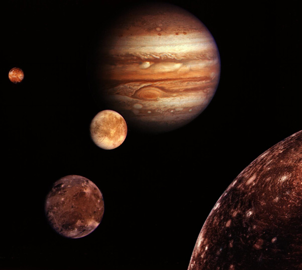
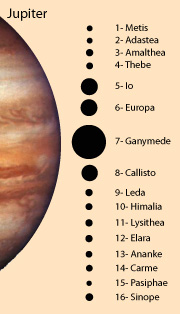

Jupiter's Moons

Montage of Jupiter and the Galilean satellites Io, Europa, Ganymede and Callisto. The images are not to scale, but are in their relative positions. At upper left, the reddish Io is nearest Jupiter. Then Europa in center, then Ganymede and Callisto at the lower right. Image credit NASA, Jet Propulsion Laboratory. These images are from Voyager I.
|

|
| Name | Distance from Jupiter | Orbit Period | Size |
| 106 m | Jupiter radii | (days) | (Longest
diameter, km) |
| Metis | 128 | 1.79 | 0.29 | 40 |
| Adastea | 129 | 1.80 | 0.30 | 20 |
| Amalthea | 181 | 2.54 | 0.50 | 260 |
| Thebe | 222 | 3.10 | 0.67 | 100 |
| Io | 422 | 5.90 | 1.77 | 3640 |
| Europa | 671 | 9.38 | 3.55 | 3130 |
| Ganymede | 1,070 | 15.0 | 7.15 | 5270 |
| Callisto | 1,880 | 26.3 | 16.7 | 4800 |
| Leda | 11,100 | 155 | 239 | 10 |
| Himalia | 11,500 | 161 | 251 | 170 |
| Lysithea | 11,700 | 164 | 259 | 24 |
| Elara | 11,700 | 164 | 260 | 80 |
| Ananke | 21,200 | 297 | 631* | 20 |
| Carme | 22,600 | 316 | 692* | 30 |
| Pasiphae | 23,500 | 329 | 735* | 36 |
| Sinope | 23,700 | 332 | 758* | 28 |
* Indicates retrograde orbit.
|
| The four largest moons are comparable to the Earth's Moon in size. They are referred to as the Galilean moons. Their orbits are direct (in the same direction as the planet's rotation), their orbits are roughly circular, and they lie close to Jupiter's equatorial plane. Io and Europa have thick rocky mantles surrounding iron/iron sulfide cores. Ganymede and Callisto are less dense, with water and water ice accounting for as much as half of their masses. Ganymede does have a small metallic core, as evidenced by the fact that it has a magnetic field, but Callisto is apparently a largely undifferentiated mixture of rock and ice. | Additional Data for the Galilean Moons
| Name | Mass
(Earth moon masses) | Density
kg/m3 |
| Io | 1.22 | 3500 |
| Europa | 0.65 | 3000 |
| Ganymede | 2.02 | 1900 |
| Callisto | 1.46 | 1900 |
|
The outer moons are in two groups of four each at about the same orbit radius. The moons of the inner group move in eccentric, inclined orbits at about 11 million kilometers, and those of the outer group move in eccentric orbits at about 22 million kilometers which are retrograde to the planets rotation. It is likely that each group came from the breakup of a single body which was captured by Jupiter's gravity.
|
Index
Solar System Illustration
Solar System Concepts
References
Chaisson & McMillan,
Ch 11. |